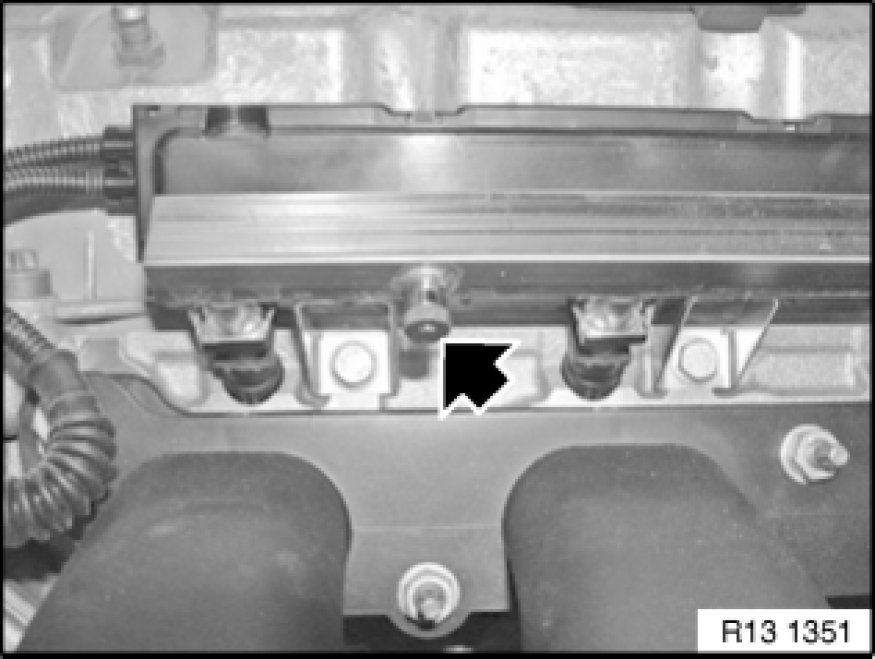

Fuel Rail: Service and Repair
13 53 240 - Replacing complete injection pipe (N52/ N52K)

Special tools required:
- 13 5 281

Necessary preliminary tasks:
- Read out fault memory of DME control unit
- Switch off ignition
- Remove clean air pipe
- Remove ignition coil cover Removing and Installing/Replacing Ignition Coil Cover

Recycling
Fuel escapes when fuel line is detached. Catch and dispose of escaping fuel.
Observe country-specific waste-disposal regulations.
N52K only:
Unclip plug connection (1) from holder (2) and disconnect.
Unclip wiring harnesses from holder (2) and connector strip (3).
Disconnect holder (2) from injection pipe.

Remove protective cap from compressed air valve.
Connect compressed air line (1) to compressed air valve.
Blow fuel back into tank with a short blast of compressed air (max. 3 bar).
Unlock and detach fuel line (1).
Detach connector strip (2) in direction of arrow.
Release screws.
Tightening torque 13 53 1AZ 13 53 Fuel Injection Nozzles and Pipes.
Remove injection pipe (3).
Seal fuel hose with special tool 13 5 281.
Lever out retainers (1).
Pull fuel injectors out of injection pipe.
Installation Note:
Replace sealing rings on fuel injectors and coat with anti-friction rubber coating.

Note:
Check stored fault messages.
Now clear the fault memory.